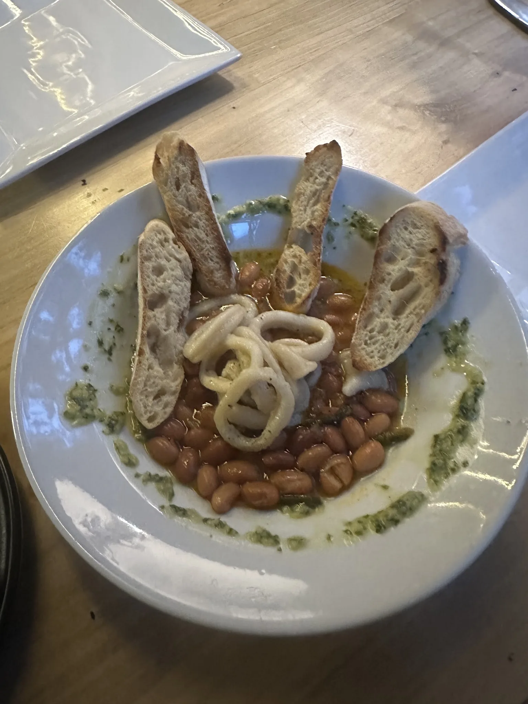
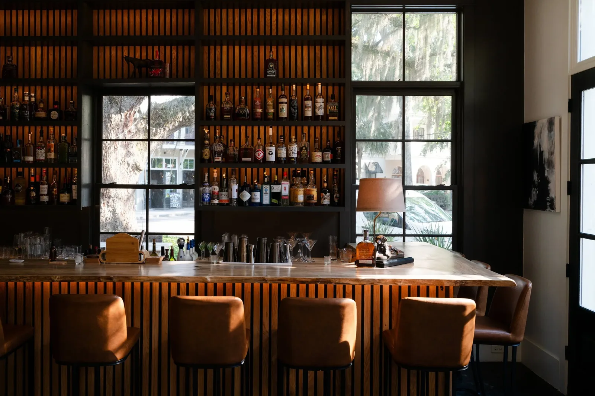
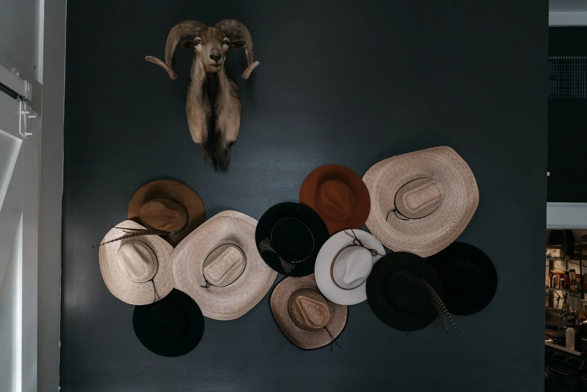
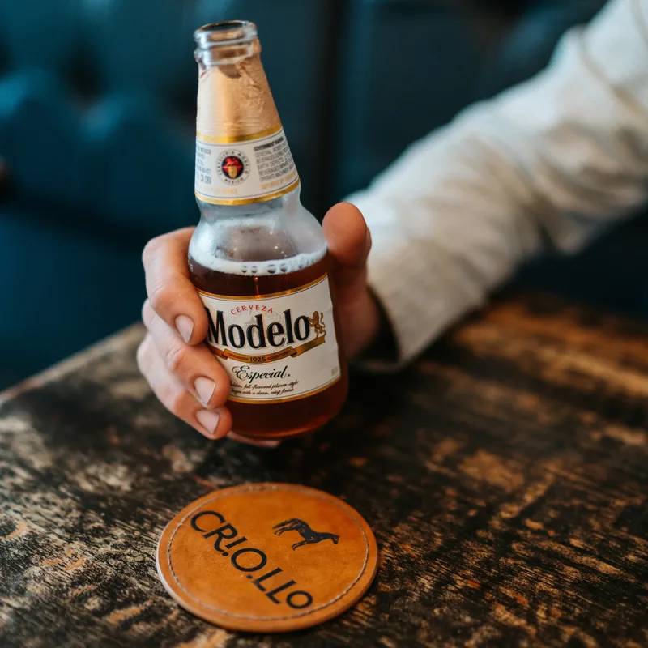
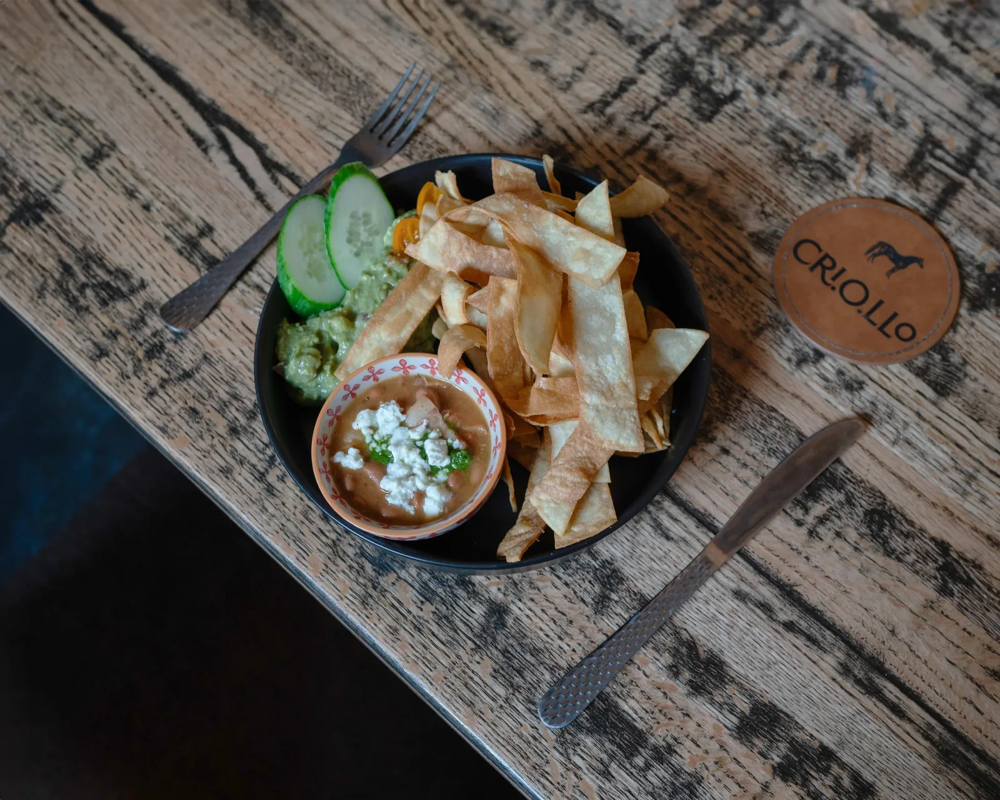
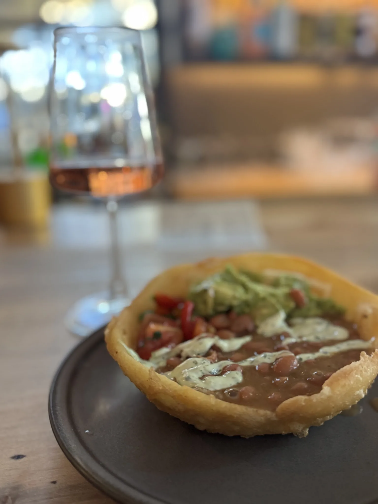
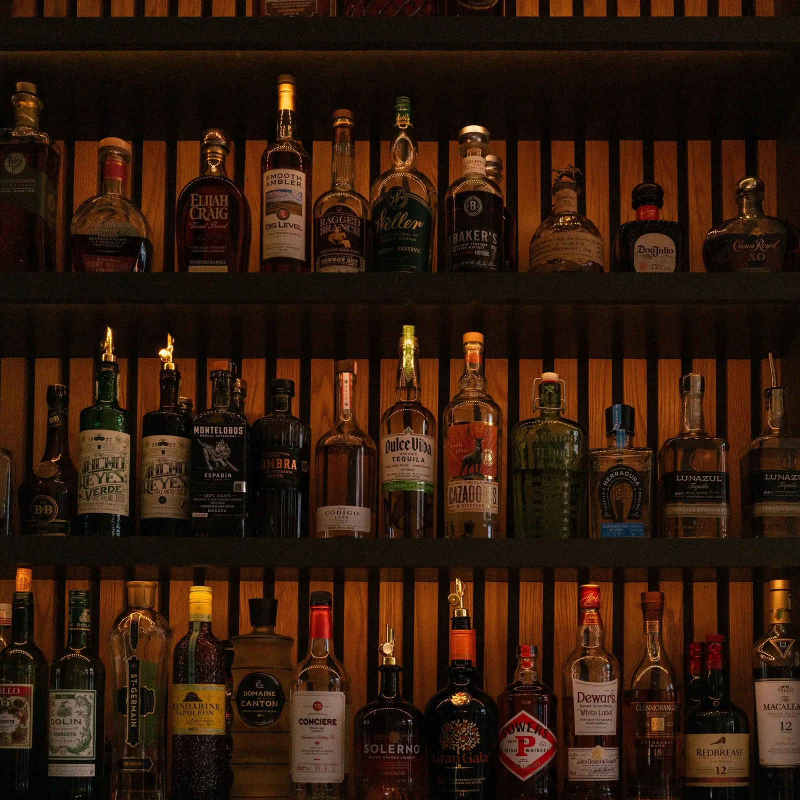
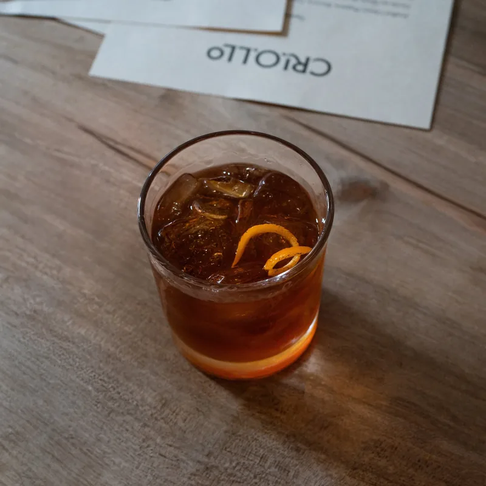
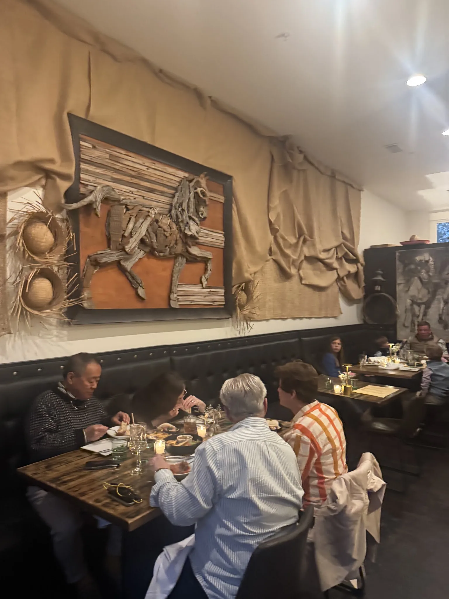
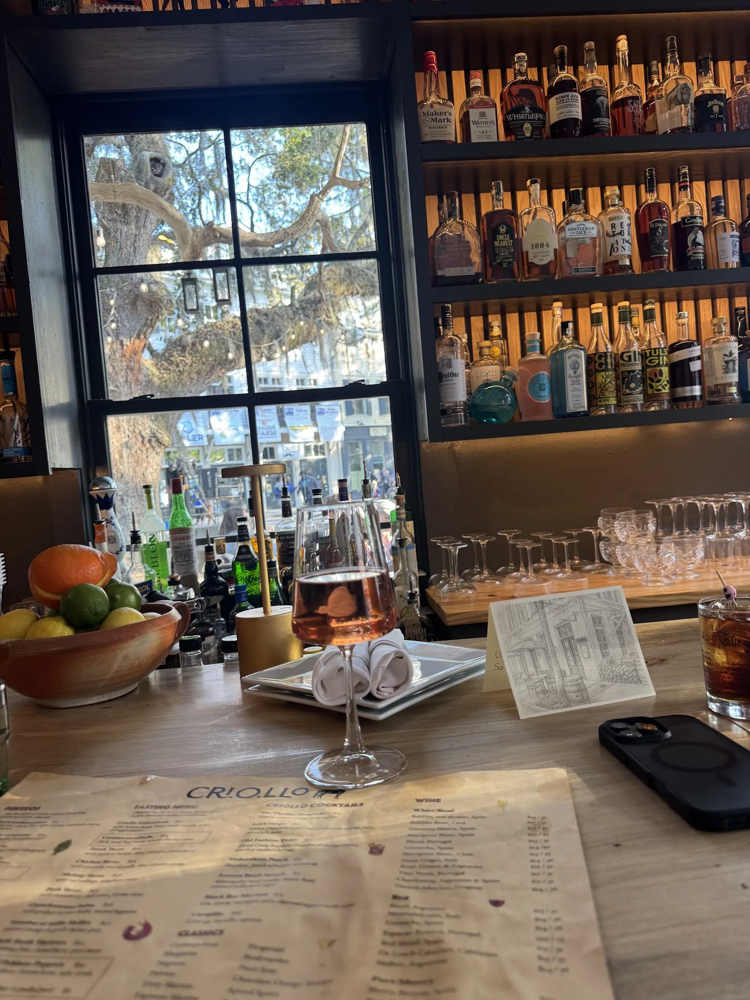

Calamar
$15Squid, brown beans, chimichurri.

Pintxos, arepas and Latin American small plates — served in a dark, warm room at 9 Market in the village of Habersham.


The criollo is the horse the Spanish carried to South America — tough, adaptable, and entirely its own thing by the time it got there. It is a fair description of the food, too.
Small plates from Spain and Latin America, cooked without much ceremony and meant to be passed around a table. Order three or order twelve. Stay for one cocktail or close the place down.

Squid, brown beans, chimichurri.

Brown beans, house-made tortilla strips or veggie spears.

Brown beans, guacamole, pico. Add chicken, shrimp or pulled pork.


A short list of cocktails built on purpose — a carrot-orange margarita, an old fashioned finished with bourbon-soaked cherries, a Carajillo to end the night.
Behind them: a deep bourbon shelf, agave spirits, and a wine list that leans Spanish, Portuguese and Argentine. Every classic you'd expect is on the board too.
“Beautiful space, cozy bar area, great Bourbon selection, excellent wine pours and amazing food… We were treated like treasured friends. Criollo really takes the Beaufort restaurant scene to the next level.”Tina Brasil
“We chose to dine on the patio, which was incredibly cozy thanks to the fireplace and — best of all — a complimentary s'mores station. The food was delicious.”Andre Gallegos
“Could not adore Criollo more. Absolutely love the decor and vibe. Such a departure from everything else in Beaufort. Food is divine.”Shannan Caldwell
We host wedding parties, rehearsal dinners, birthdays and holiday tables — indoors and out on the patio.
“We had our small, 50 guest reception here recently… The reception was perfect — everything, food, ambiance and service was beyond our highest expectations.”George Kages


Ten steps away at 10B Market, our garden-to-plate bistro serves lunch six days a week plus wine dinners, cooking classes and Sunday suppers. Same owners, a different mood entirely.